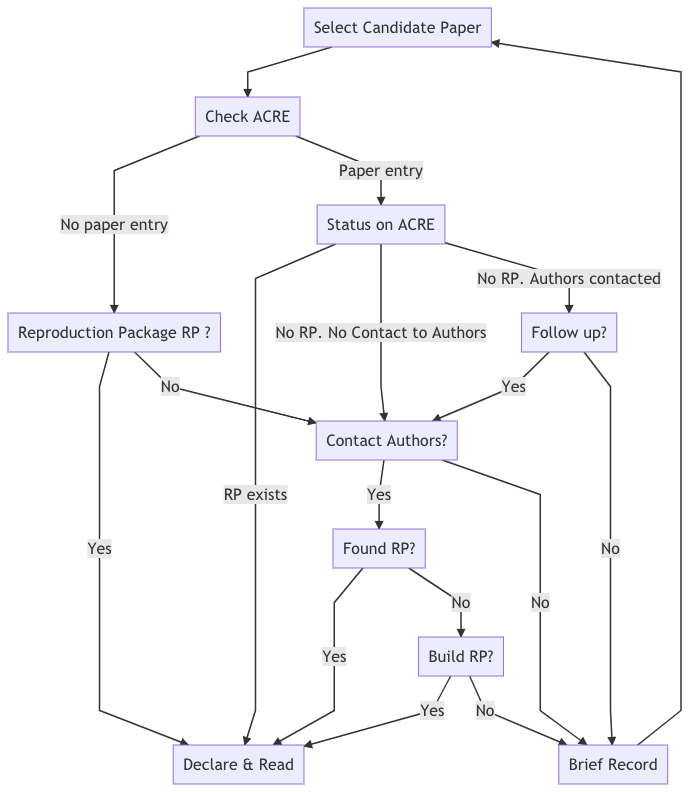

Chapter 1 Scoping
In this stage, you will define the scope of the exercise by declaring a paper and the specific output(s) on which you will focus on the remainder of the exercise. But before you decide to move forward with the paper that you will analyze in the remainder of the exercise (we refer to this as the “declared paper”), you may first consider a few other papers, but not analyze them closer (we refer to those as “candidate papers”).
Most likely, you will choose a declared paper based on whether or not you can locate its reproduction package. We define a reproduction package (in other contexts referred to as a “replication package”) as the collection of all materials that make it possible for a reproducer to reproduce the paper. This package may contain data, code, and/or documentation. If you are unable to independently locate the reproduction package for your paper, you can ask for it from the author of the paper (find guidance on how to do so in Chapter 6) or simply choose another candidate paper. For the sake of avoiding duplication of effort of others who may be interested in reproducing one of your candidate papers, we ask that you record your candidate papers in the ACRE database (currently under development). If you still want to explore the reproducibility of a paper with no reproduction package, these guidelines will provide instructions on how to contact the authors with a specific request for materials to create a public reproduction package, or if this route proves unsuccessful, on how to build your reproduction package from scratch.
Note that in this stage, you are not expected to review the reproduction materials in detail, as you will dedicate most of your time to this in later stages of the exercise. If materials are available, you will read the paper and declare the scope of the reproduction exercise. You can expect to spend between 1-3 days in the Scoping stage, though this may vary based on the length and the complexity of the paper, and the availability of reproduction materials.
Use Survey 1 to record your work in this stage.
1.1 From candidate to declared paper
At this point of the exercise, you are only validating the existence of (at least) one reproduction package and not assessing the quality of its content. Follow the five steps to verify the existence of a reproduction package, and stop whenever you find it (which would mean that you have found your declared paper).
- Check whether there are previous reproduction attempts of that paper recorded in the ACRE database (learn more in the next section).
- Check the paper’s webpage on the website of the journal or publisher, looking for materials named “Data and Materials”, “Supplemental Materials”, “Reproduction/Replication Package/Materials”, etc.
- Look for links in the paper (review footnotes and appendices).
- Review the personal websites of the author(s) of the paper.
- Contact the author to request the reproduction package using this email template. In this and your future interactions with authors, we encourage you to follow our guidance outlined in Chapter 6.
- Deposit the reproduction package in a trusted repository (e.g., Dataverse, Open ICPSR, Zenodo, or the Open Science Framework) under the name
Original reproduction package for - Title of the paper. You will be asked to provide the URL of the repository in Survey 1.
In case you need to contact the authors, make sure to allocate sufficient time for this step (we suggest at least three weeks before the date when you plan to start the reproduction). Instructors should also plan to accordingly (e.g., if the ACRE exericse is expected to take place in the middle of the semester, students should review candidate papers and (if applicable) contact the authors in the first few weeks of the semester).
Review the decision tree (Figure #) below for a more detailed overview of this process. Remember, if at any step of the process you decide to abandon the paper, make sure to record the candidate paper in the ACRE database before moving to another candidate paper. Once you have obtained the reproduction package, the candidate paper becomes your declared paper and you can move forward with the exercise! Do not invest time in doing a detailed read of any paper until you are sure that it is your declared paper.
1.1.1 Candidate paper entries in the ACRE Database
If the ACRE database contains previous reproduction attempts of the paper, you will see a report card with the following information:
Box 1: Summary Report Card for ACRE Paper Entry
Title: Sample Title
Authors: Jane Doe & John Doe
Original Reproduction Package Available: URL/No [What does this mean? Add some context]. [If “No”] Contacted Authors?: Yes/No
[If “Yes(contacted)”] Type of Response: Categories (6).
Additional Reproduction Packages: Number (eg., 2)
Authors Available for Further Questions for ACRE Reproductions: Yes/No/Unknown
Open for reproductions: Yes/No [Same as above: what does this mean? Add more context].
If after going through steps 1-5 above (or for other reason) you were unable to locate the reproduction package, record your candidate paper (and if applicable, the outcome of your correspondence with the original authors) in the ACRE database following the example above.
View Decision Tree To Select Paper (Emma: add title and solve bug with svg)

1.2 Scoping your declared paper
Once you have identified your declared paper, it is time to get familiarized with the paper and decide on the specific output(s) on which you will focus on the remainder of the exercise. The following sections in this chapter will show you how to do that.
1.2.1 Read and summarize the paper
Depending on how much time you have, we recommend that you write a short (1-2 page) summary of the paper. This will help remind you of the key elements to focus on for the reproduction, and to demonstrate your understanding of the paper (for yourself and others like your instructor/advisor).
When reading/summarizing the paper, try to answer the following questions:
- Would you classify the paper’s scientific claims as mainly focused on estimating a causal relationship, estimating/predicting a descriptive statistic of a population, or something else?
- How many scientific claims (descriptive or causal) are investigated in the paper?
- What is the population for which the estimates apply?
- What is the population that is the focus of the paper as a whole?
- What are the main data sources used in the paper?
- How many display items are there in the paper (tables, figures, and inline results)?
- What is the main statistical or econometric method used to examine each claim?
- What is the author’s preferred specification (or yours, if authors are not clear)?
- What are some robustness checks to the preferred specification?
1.2.2 Record scope of the exercise
By now you should have a fairly good understanding of the content of the paper. You do not, however, need to have spent any time reviewing the reproduction package in detail.
At this point, you should clearly specify which part of the paper will be the main focus of your reproduction. Focus on specific estimates, represented by a unique combination of claim-display item-specification as represented in ??. If you plan to scope more than one claim, we strongly recommend starting with just one and recording your results. You can then initiate another record in ACRE later for the second (or third, etc.) claim to reproduce, using the materials and knowledge you developed in the first exercise. You can, however, reproduce more than one claim if you are already familiar with the paper.
In the Assessment stage, the reproduction will be centered around the display item(s) that contain the specification you indicate at this point.
Declare specific main estimates to reproduce.
Identify one of the scientific claims, and its corresponding preferred specification, and record its magnitude, standard error, and location in the paper (page, table #, and row and column in the table). If the authors did not explicitly chose a particular estimate, you will be asked to select one. In addition to the preferred estimate, reproduce up to five estimates that correspond to alternative specifications of the preferred estimate.
Declare possible robustness checks to main estimates (optional).
After reading the paper, you might wonder why the authors did not conduct a specific robustness test. If you think that such analysis could have been done within the same methodology, and using the same data (eg., including/excluding a subset of the data like “high-school dropouts” or “women”), please specify a robustness test that you would like to test before starting the assessment stage.
These are the elements you will need to conduct the scoping stage. You now have all the elements necessary to complete Survey 1.
1.3 Identify your relevant timeline.
Before you begin working on the three main stages of the reproduction exercise (Assessment, Improvement, and Robustness), it is important to manage expectations (yours and those of your instructor/advisor). Be mindful of your time limitations when defining the scope of your reproduction activity. These will depend on the type of exercise chosen by your instructor/advisor and may vary from a homework assignment (e.g., over a couple of weeks), to a longer class project that may take a month to complete, or a semester-long project (for example as an undergraduate thesis).
Table 1 shows a tentative distribution of time across three different reproduction formats. The Scoping and Assessment stages are expected to last roughly the same amount of time across all formats (lasting longer for the semester-long activities and expecting less experience with research if the reproducer is an undergraduate student). Differences emerge in the distribution of time for the last two main stages: Improvements and Robustness. For shorter exercises, we recommend staying away from any possible improvements to the raw data (or cleaning code). This will limit how many robustness checks are possible (for example, by limiting your ability to reconstruct variables according to slightly different definitions), but it should leave plenty of time for testing different specifications at the analysis level.
Emma: please write this table using R and KableExtra
|
2 weeks (~10 days) |
1 month (~20 days) |
1 semester (~100 days) |
||||
|---|---|---|---|---|---|---|
| analysis data | raw data | analysis data | raw data | analysis data | raw data | |
| Scoping | 10% (1 day) | 5% (1 day) | 5% (5 days) | |||
| Assessment | 35% | 25% | 15% | |||
| Improvement | 25% | 0% | 40% | 20% | 30% | |
| Robustness | 25% | 5% | 25% | 25% | ||